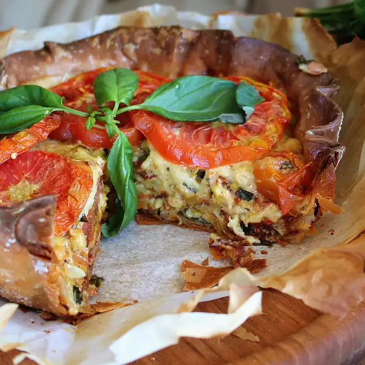

Amish Tomato Pie

Description
Fresh tomatoes and a rich, cheesy filling make a summertime savory pie. There is a lot of preparation for this pie, but it is well worth every minute. I love this pie on summer mountain evenings. Enjoy with cool ice tea.
Ingredients
- 1 recipe pastry for a 9-inch pie crust
- 2 pounds heirloom tomatoes
- 1 pound Roma tomatoes
- 1 cup diced raw bacon
- ½ cup sliced leek
Directions
- Chill pie dough for about 1 hour.
- Preheat the oven to 425 degrees F (220 degrees C). Place a baking sheet on the lower oven rack.
- Slice heirloom tomatoes into 1/2-inch rounds. Remove seeds with your fingers. Place 6 slices on paper towels or a clean cloth and cover with more paper towels or another clean cloth. Arrange the remaining slices on a wire rack. Cut Roma tomatoes into 1/2-inch slices, remove seeds, and arrange them on the rack as well.